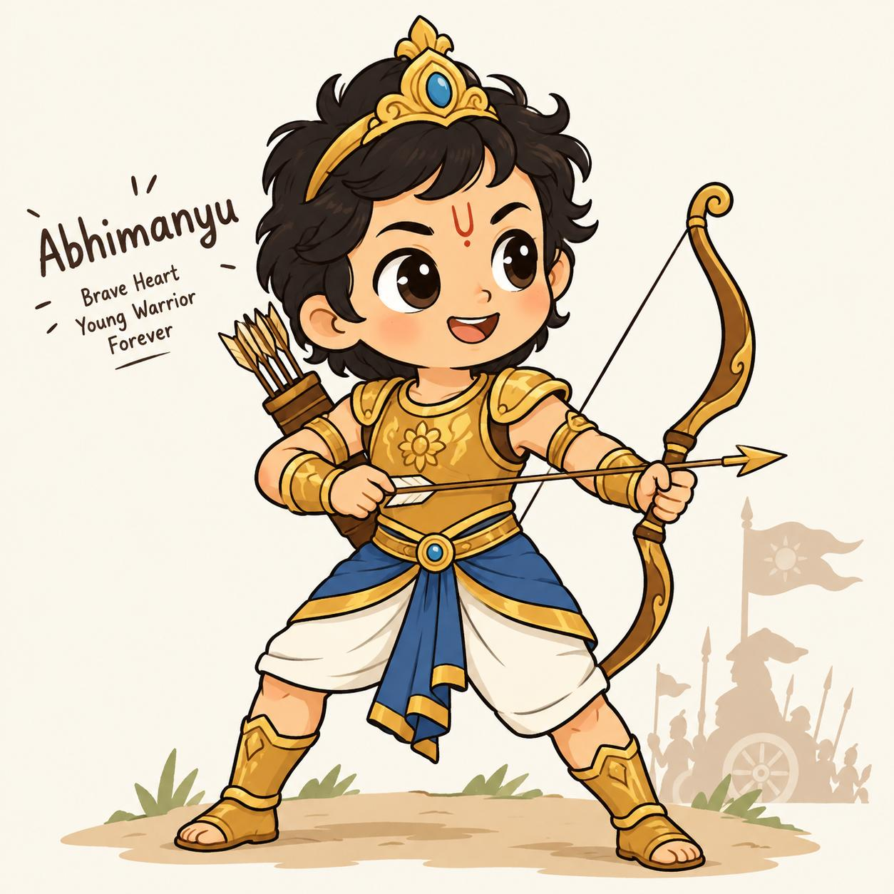

Abhimanyu
Brave Heart · Young Warrior · Forever
waiting for a maze
Jev decides every move. Abhimanyu walks the rings one hop at a time — past the warriors to the target, or not at all.

Jev decides every move. Abhimanyu walks the rings one hop at a time — past the warriors to the target, or not at all.